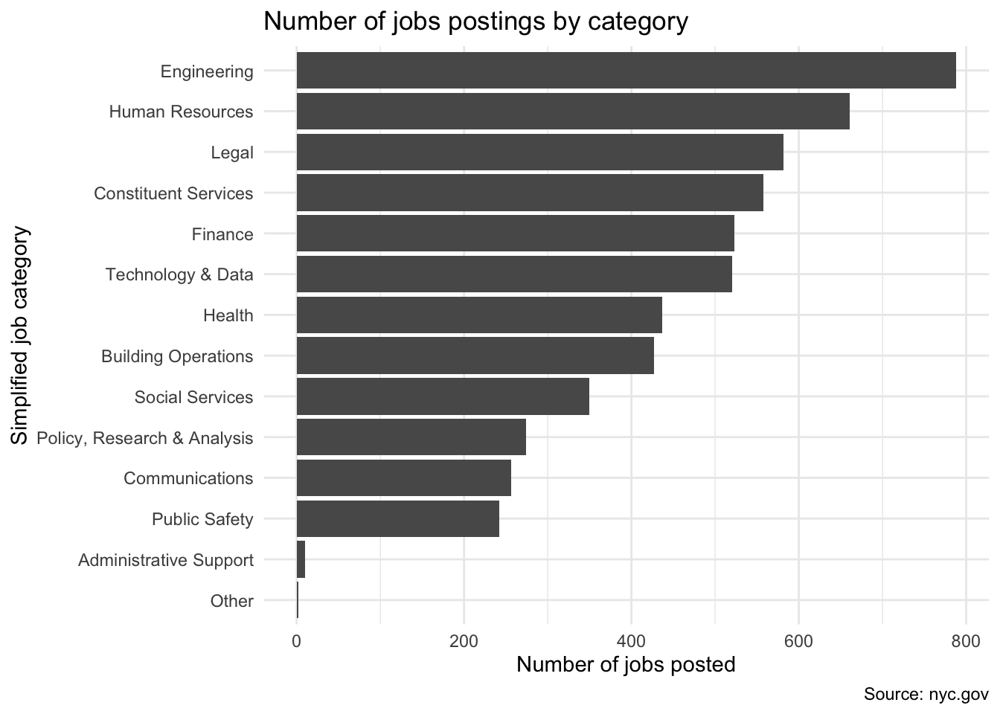
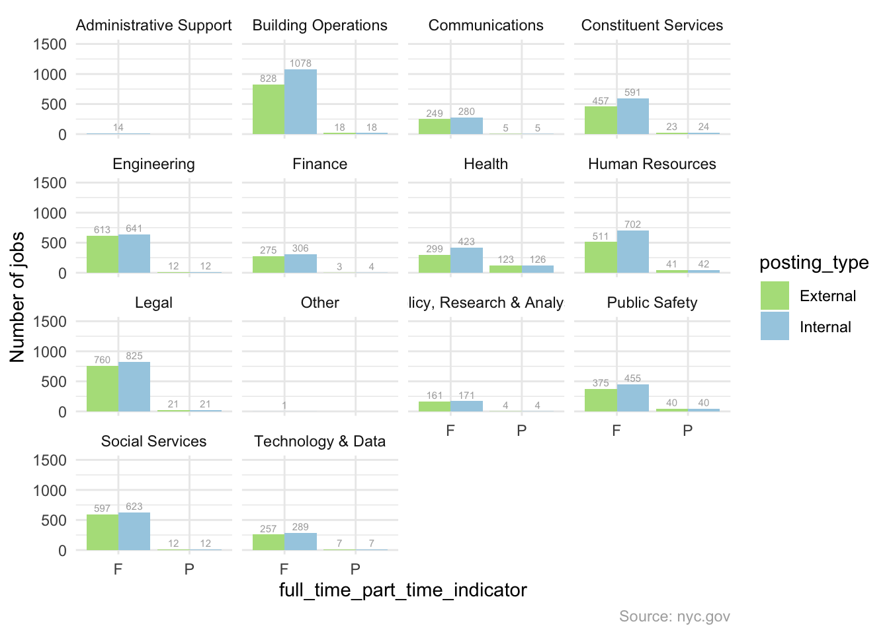
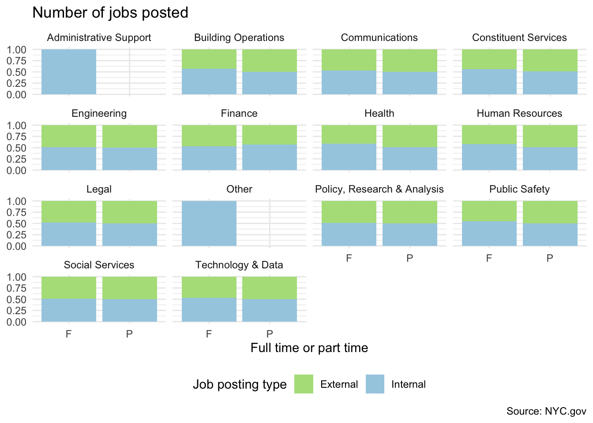
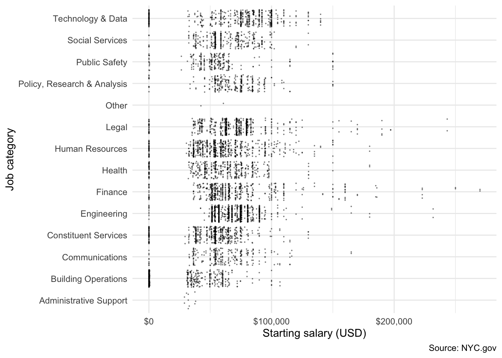
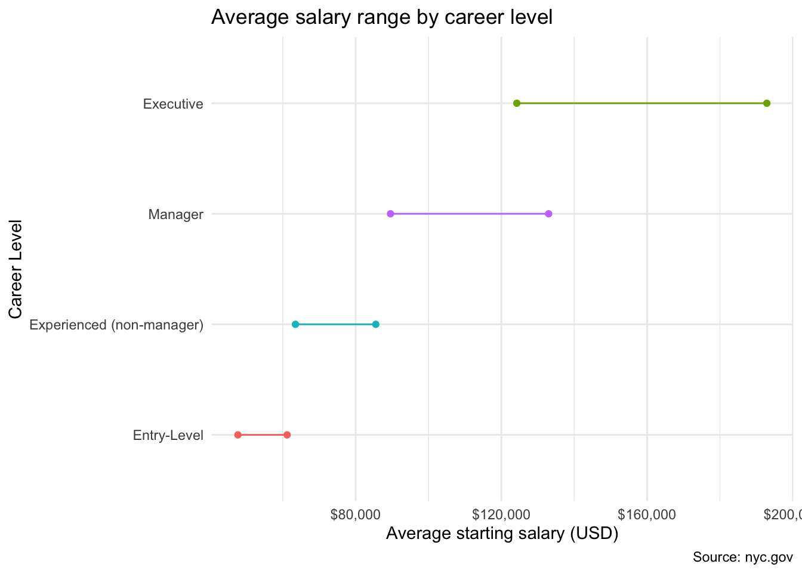
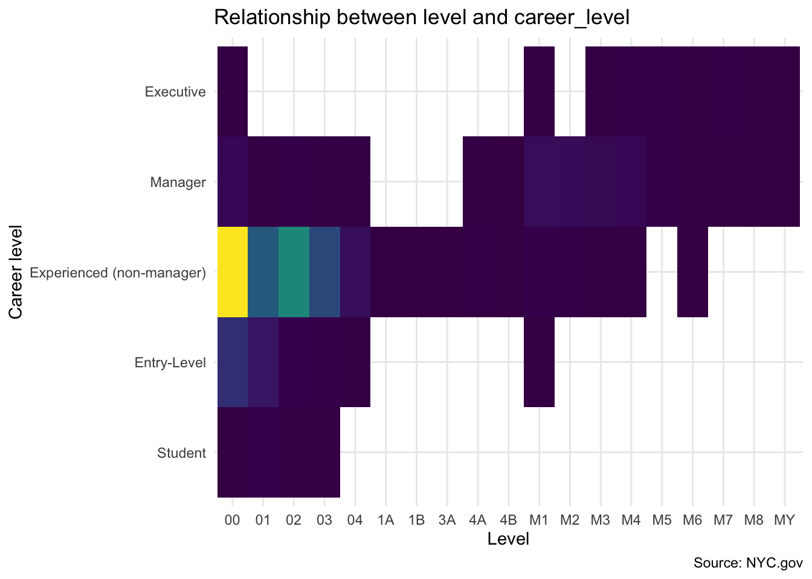
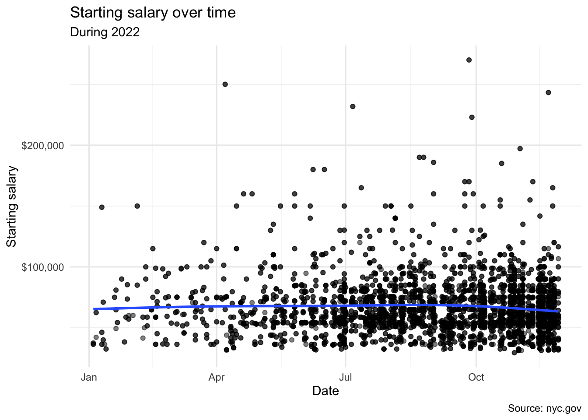

Chapter 4 Results
4.1 Data exploration
In order to explore our data, we first wanted to look at the distribution of different job postings by category.

Based on this plot, engineering jobs clearly are the most prolific, with human resources and legal also being common in the NYC job board. The least common job postings by far are administrative support.
Next we want to see the posting type and Full-Time/Part-Time type for different catogories.

We can find that for all the different categories, there are more internal jobs than external jobs, and almost all the jobs all full time, there are few part time jobs.
Next, we wanted to see what categories of jobs have the highest starting salary.

Based on the scatter plot, we can see that Engineering seems to have the highest starting salary, Public Safety and Building Operations seems to have the lowest starting salary. Legal and Finance have the largest starting salary variance.We can also find that there are many extremely low starting salary, and we try to find that all of these points’ career level are students, maybe many jobs give student only a small amount of salary.
Next, we wanted to see what sort of factors impacted the salary range of a job.
Technology and data appeared to have the highest average salary potential at around 150k USD Administrative support had the lowest average salary potential at around 50k USD. The ‘other’ category had the largest salary range, which makes sense because it is a miscellaneous category with several possible job types.
Next we looked at the salary ranges of the different posting agencies.
The Municipal Water Fin Authority posted jobs with the highest average salary potential, at around 140k USD. The Business Integrity Commission posted jobs with the lowest average salary potential, around 55k USD. Next we looked into how a job’s level impacted its salary. We split the level into three categories based on the code given to the level.

The levels that started with M had the highest average salary potentials, while the levels that started with numbers tended to be associated with lower average salary potentials. The level with the highest average salary potential is MY. In fact, the lower end of the salary range is higher than the higher end of any other level’s average salary range.
Next we want to see the average starting salary by career level.
It seems that Student have the lowest salary, and executive have the highest salary, and excutive has the largest salary range.
Then we want to see if there is any relationship between level and career level.

According to the plot, we can see that job level is highly related to career_level, for example, student only can take low level job, from 00 to 02, Entry_level tend to take 00-04 and M1 jobs; Executive tend to take high level jobs from M3 to MY; and Experienced seems to have a high range level of jobs.
After looking at the different factors that influenced salary range, we wanted to see if the salaries of jobs posted changed over time. In order to do so, we only looked at the lower end of the salary ranges for each job posted in our data set.

While there does not appear to be a huge change over time, job salaries seem to drop a bit during July 2020.
After looking at the different factors that influenced salary range, we wanted to see if the salaries of jobs posted changed over time. In order to do so, we only looked at the lower end of the salary ranges for each job posted in our data set.

While there does not appear to be a huge change over time, job salaries seemed to peak around 2021. When focusing on 2022, it seems as though salaries peaked around August.
Here we looked into whether or not a job posting requires specific skills.
As the seniority increases, so does the percentage of postings that require previous skills. This makes sense based on what we expected.